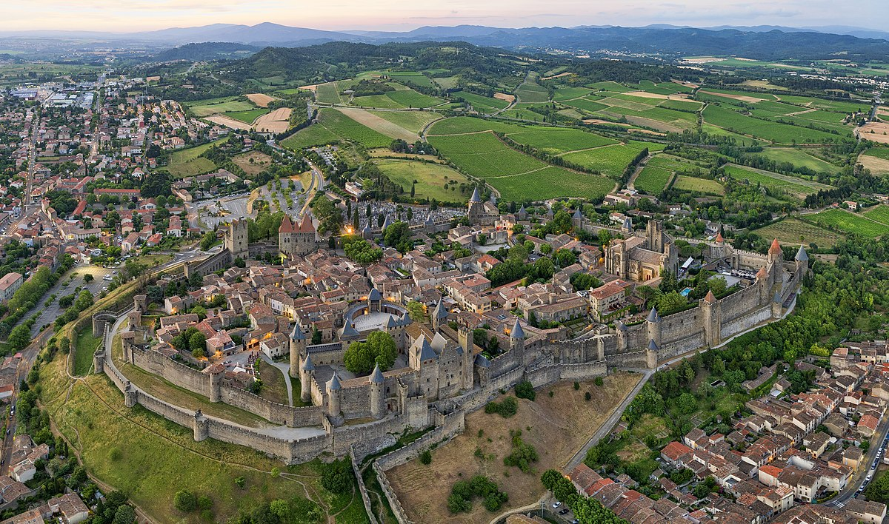

Рома́нське мисте́цтво також Романіка — стиль та однойменна епоха у мистецтві середньовічної Європі від дороманики до готики; охоплює живопис, скульптуру і архітектуру. Хронологічно у різних частинах Європи її генезис та панування відрізняється — у архітектурі воно стає помітним з 1000 року, а кінець та перехід до готики відбувся протягом XIII ст. (у Франції трохи раніше — вже у 1130 році).
Каркасон, Франція